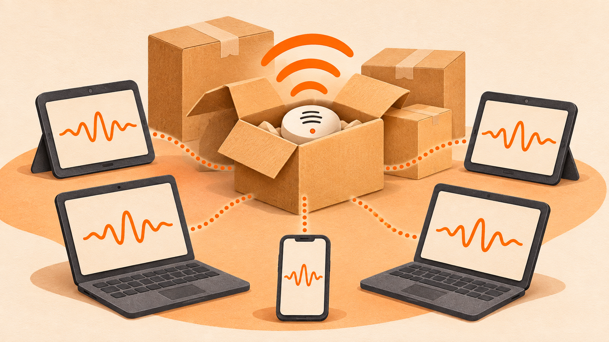
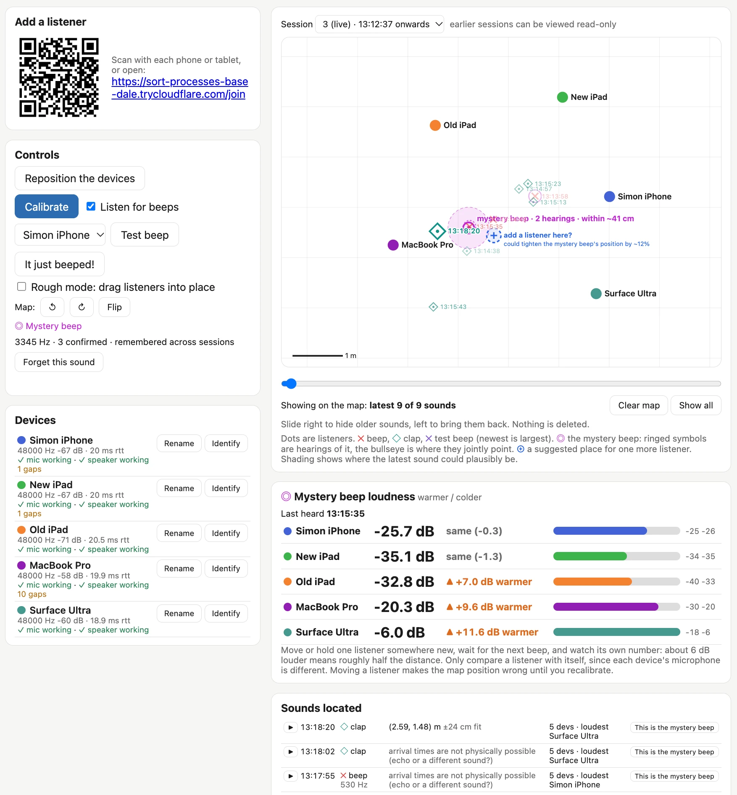

HELLO, HUMAN! CASE STUDY 09
AI에게 귀를 달아
경고음의 위치를 찾다
Beep Locator로 살펴보는
관찰과 검증 중심의 에이전트 개발

이사한 뒤 풀지 않은 상자가 쌓인 방에서 가끔 삐 소리가 났습니다. 소리가 나는 간격이 길어 귀로 위치를 좁히기도 어려웠습니다. 사이먼 윌리슨은 이 문제를 풀려고 Claude Code와 함께 Beep Locator를 만들었습니다.
휴대전화 한 대, 태블릿 두 대, 노트북 두 대를 청취 장치로 연결한 도구입니다. 2026년 11월 9일 공개한 기록에 따르면, 그는 위치를 약 40cm 범위로 좁힌 뒤 해당 상자 더미에서 오래된 일산화탄소 감지기를 찾았습니다. 배터리 교체를 알리는 소리가 원인이었습니다.
삐 소리 하나가 작은 연구개발 프로젝트를 발주한 셈입니다.
이 사례에서 눈여겨볼 부분은 에이전트가 측정값과 실행 로그, 사람의 피드백을 바탕으로 도구를 고칠 수 있도록 환경을 마련했다는 점입니다. 코드를 만든 뒤 실제 동작을 확인하며 개선하는 과정을 보여줍니다.
사례와 결과 · Simon Willison의 제작 기록 ↗

왼쪽 · 관측 준비기기를 연결하고, 배치를 보정하고, 시험용 소리를 냅니다.
오른쪽 · 위치 추정기기와 감지한 소리를 지도에 놓고 탐색할 범위를 표시합니다.
아래 · 근거 재확인녹음을 재생해 목표 소리인지 확인하고, 계산 실패도 살펴봅니다.
먼저 정한 것은
문제와 성공 기준
출발점은 문제를 정리하는 문서였습니다. 윌리슨은 코드를 만들기 전에 problem.md부터 작성하도록 했습니다. 이 문서는 풀어야 할 문제를 두 가지로 나눕니다.
기기들이 어디에 있는가
여러 기기의 녹음을 비교하려면, 먼저 청취 기기들의 상대적인 배치를 알아야 합니다.
경고음이 어디에서 났는가
그 배치를 기준으로 같은 소리가 여러 마이크에 도착한 시차를 비교해 위치를 추정합니다.
성공 기준도 구체적입니다. 몇 차례 소리를 관측한 뒤 탐색 범위를 약 0.5m로 좁혀, 어느 모서리나 선반을 살펴볼지 알려주는 것입니다.
이 기준은 어디까지 만들면 되는지 알려줍니다. 물건을 찾으려는 사람에게 필요한 것은 다음에 뒤져볼 구역입니다. 그 구역을 가리킬 만큼 범위가 좁아지면 도구는 제 역할을 합니다.
업무 자동화에서도 같은 방식으로 목표를 잡을 수 있습니다. ‘AI가 원인을 분석한다’보다 ‘담당자가 확인할 후보 세 개와 각 후보의 근거를 제시한다’가 구현하고 검증하기 쉽습니다.
근거 · 문제 정의와 성공 기준 ↗ · 처음 요청한 작업 ↗
여러 기기의 녹음을
비교하는 방법
Beep Locator는 Python 서버가 전체 작업을 조정하고, 각 기기는 QR 코드나 참여 주소를 통해 브라우저로 접속합니다. 브라우저는 녹음과 경고음 감지를, Python 서버는 녹음 비교와 위치 계산을 맡습니다.
핵심은 같은 소리가 각 마이크에 도착한 시간의 차이입니다. 이를 TDOA라고 부릅니다. 가까운 마이크에는 먼저, 먼 마이크에는 나중에 소리가 도착하는 원리를 이용합니다.
문제는 서로 다른 기기의 시계와 오디오 처리 지연입니다. 각 기기가 기록한 시각을 그대로 비교하면 실제 소리의 시차와 기기 자체의 지연이 뒤섞입니다. 이를 풀기 위해 두 종류의 측정을 연결합니다.
먼저 기기 사이의 거리를 구합니다
기기들이 차례로 기준음을 내고, 자신의 소리와 다른 기기의 소리를 함께 녹음합니다. 각 녹음 안에서 두 소리 사이의 간격을 구한 뒤, 기기별 측정값을 비교해 거리를 계산합니다. 기기들의 시계를 직접 맞추는 대신 각 녹음 안의 시간 간격을 이용하는 접근입니다. 출발점은 2007년 발표된 BeepBeep 연구 ↗입니다.
경고음 뒤에 기준음을 붙여 비교합니다
기기들은 최근 60초의 소리를 보관합니다. 경고음이 감지되면 기기 하나가 짧은 기준음을 내고, 서버가 경고음과 기준음이 함께 담긴 구간을 모읍니다. 기준음과 기기 배치를 이용해 녹음의 시간축을 맞춘 뒤 경고음의 도착 시차를 계산합니다.
- 01 · 기기 배치서로 기준음을 듣습니다각 녹음 속 두 소리의 간격으로 기기 사이 거리를 구합니다. 사람이 대략 놓은 배치도 보정에 사용할 수 있습니다.
- 02 · 경고음 감지짧은 기준음을 더 냅니다경고음이 난 직후 청취 기기 하나가 소리를 내, 여러 녹음에 공통 기준을 남깁니다.
- 03 · 시간축 보정기준음의 이동시간을 더합니다각 녹음에서 경고음과 기준음의 도착 간격을 구하고, 기준음이 해당 마이크까지 이동한 시간을 반영합니다.
- 04 · 위치 계산시차에 맞는 위치를 찾습니다여러 기기의 결과를 비교합니다. 유효한 측정이 부족하거나 시차가 성립하지 않으면 위치 계산을 보류합니다.
기준음도 모든 마이크에 동시에 도착하지 않습니다. 녹음에서 기준음이 시작된 지점을 맞출 때, 기기 사이 거리에 따른 도착 시차도 반영해야 합니다.
실제 분석 코드는 이미 구한 기기 간 거리로 기준음이 이동한 시간까지 보정합니다. 보정한 시차가 기기 사이 거리로 가능한 범위를 벗어나면 의심되는 기기를 제외할 수 있는지 살피고, 그래도 맞지 않으면 위치 대신 오류를 반환합니다.
이 구조에서 AI의 역할은 측정 도구를 만들고 개선하는 것입니다. 관측값을 처리할 프로그램과 실험 환경을 연결해, 에이전트가 소리에 관한 증거를 다룰 수 있게 했습니다.
근거 · 실행 구성 ↗ · 기준음 재생과 녹음 수집 ↗ · 시차 보정과 위치 계산 ↗
관측을 유지하면서
코드를 고치는 환경
처음 만든 프로그램은 아직 실제 기기에서 실행해보지 않은 상태였습니다. 윌리슨은 노트북에서 서버를 실행하고 기기들을 연결한 뒤, 소리와 동작을 확인하며 기능을 보완했습니다. 일부 기기에서는 페이지를 다시 불러올 때마다 마이크 사용을 다시 허용해야 했습니다.
이 수고를 줄인 장치가 실행 중인 기능 모듈의 원격 교체입니다. 마이크와 연결을 관리하는 기반 코드는 유지하고, 수정한 JavaScript 모듈을 연결된 브라우저로 보냅니다. 공개 코드에는 새 모듈을 불러오지 못하면 기존 버전을 유지하고, 새 모듈의 시작에 실패하면 이전 버전으로 복귀를 시도하는 처리도 들어 있습니다.
기기를 흩어 놓은 상태에서 매번 돌아다니며 새로고침할 필요가 줄어듭니다. 수정 후 실험을 다시 시작하기가 쉬워지면, 작은 변경을 시도하고 결과를 확인하는 작업도 자주 할 수 있습니다.
공개된 제어 도구로는 기기 상태, 위치 추정 결과, 녹음 파일과 이벤트 로그를 조회할 수 있습니다. 에이전트가 코드를 바꿀 통로뿐 아니라, 바꾼 뒤 무슨 일이 일어났는지 살펴볼 통로도 마련한 것입니다.
예를 들어 기기들이 소리를 주고받아 배치를 알아내는 기능은 처음에 잘 작동하지 않았습니다. 그래서 사람이 지도에 대략적인 위치를 놓고, 소리로 이를 보정하는 Rough mode를 추가했습니다. 현장에서 드러난 문제에 맞춰 사람이 도울 지점을 만든 셈입니다.
| 확인해야 할 것 | 추가한 기능 |
|---|---|
| 지도와 실제 기기 배치가 맞는가 | 아이콘을 대략 배치한 뒤 보정하는 Rough mode |
| 알고 있는 위치의 소리를 제대로 찾는가 | 여러 지점에서 박수를 치며 시험하는 기능 |
| 감지한 소리가 찾던 경고음인가 | 기기별 녹음 재생과 목표 소리 확인 기능 |
- 01 · 기기소리를 수집합니다마이크 녹음과 기기 상태를 남깁니다.
- 02 · 프로그램위치를 계산합니다신호를 비교하고 추정 위치와 진단 정보를 보여줍니다.
- 03 · 사람현실과 대조합니다기기를 놓고, 박수를 치고, 녹음이 찾던 소리인지 확인합니다.
- 04 · 에이전트도구를 고칩니다로그와 피드백을 살펴 기능을 수정하고 다시 관측합니다.
탐색할 만큼 범위가 좁아지면 사람이 해당 구역에서 물건을 찾습니다. 더 확인해야 하면 기기 배치나 도구를 고쳐 관측으로 돌아갑니다.
이 역할 분담을 업무에 옮기면, 사람은 목표와 현장 맥락을 제공하고 에이전트는 관측·분석·수정을 반복하도록 설계할 수 있습니다. 사람의 판단이 필요한 순간마다 무엇을 확인할지 구체적으로 정해두는 것이 중요합니다.
다만 원격 모듈 교체는 연결된 기기에서 새 코드를 실행하는 기능입니다. 업무에서는 테스트 환경의 정해진 대상과 권한 안에서 수정과 재검증을 이어가는 방식으로 적용할 수 있습니다.
근거 · 현장에서 추가한 기능 ↗ · 모듈 교체와 복귀 처리 ↗ · 상태·녹음·로그 조회 도구 ↗
약 40cm라는
결과를 읽는 법
관련 자료에는 서로 다른 의미의 수치가 등장합니다. 같은 정확도 지표로 비교하면 이 사례를 잘못 이해하게 됩니다.
- 약 7mm
- 샘플 간격 동안 소리가 이동하는 거리설계 문서의 48kHz 오디오는 1초를 48,000개 샘플로 나눕니다. 음속을 343m/s로 놓으면 한 샘플 간격 동안 이동하는 거리는 343 ÷ 48,000 ≈ 0.0071m입니다.설계 문서의 계산 ↗
- 약 1~2cm
- 두 기기 사이 거리 측정의 오차 수준BeepBeep 논문이 당시 두 휴대전화 모델을 사용한 실험에서 보고한 수치입니다. 논문은 10m가 넘는 거리 범위도 다룹니다.2007년 논문 초록과 평가 ↗
- 약 40cm
- 집 안에서 물건을 찾는 데 쓴 탐색 범위윌리슨이 여러 기기로 경고음 위치를 좁혔다고 보고한 결과입니다. 이 글에서 별도로 재측정하지 않았습니다.제작자의 결과 보고 ↗
샘플 사이의 간격이 촘촘해도 완성된 시스템이 그만큼 정확한 것은 아닙니다. 기준음을 주고받는 두 기기 사이의 거리 측정과, 정체를 모르는 소리의 위치를 찾는 작업도 다릅니다.
설계 문서는 반사음, 기기 배치, 높이 차이, 시간이 지나며 기기의 오디오 시계가 서로 어긋나는 현상을 오차 요인으로 다룹니다. 따라서 약 40cm는 이 현장에서 물건을 찾는 데 도움이 된 결과로 읽어야 합니다. 모든 방과 기기 조합에서 보장되는 제품 사양으로 확대할 수는 없습니다.
직접 찾는 방법도
비용 계산에 넣기
이 정도 일을 해결하려고 여러 기기와 서버를 동원할 필요가 있었는지는 따져볼 만합니다.
상자를 두 무리로 나눠 다른 공간으로 옮기고 어느 쪽에서 소리가 나는지 확인하는 방법도 생각할 수 있습니다. 다음 소리가 날 때까지 기다린 뒤, 소리가 있는 무리를 다시 나누면 됩니다. 다만 확인 횟수가 줄어도 상자를 옮기는 노동과 대기시간은 남습니다.
한 번 겪는 문제이고 물건이 적다면 직접 찾는 편이 나을 수 있습니다. 비슷한 문제가 반복되거나, 접근하기 어려운 위치에 물건이 있다면 관측 도구의 가치가 커질 수 있습니다.
우리 업무에서도 수작업에 걸리는 시간과, 도구의 준비·실행·검증에 드는 시간을 함께 비교하면 좋습니다. ‘AI로 만들 수 있다’ 다음에는 ‘몇 번 쓰면 이 수고가 줄어드는가’를 계산해야 합니다.
제작기는 전체 개발·탐색 시간이나 모델 이용료를 제시하지 않습니다. 그래서 이 사례의 비용 절감률을 계산할 수는 없습니다. 반복 업무에 적용할 때는 도구를 만드는 초기 수고와, 매번 실행하고 결과를 확인하는 수고를 나눠 기록해 비교할 수 있습니다.
커머스 개발에 적용할
관찰과 검증 원칙
이 사례를 업무에 적용할 때 먼저 찾아볼 것은 에이전트가 직접 확인할 수 있는 증거입니다. 서버 로그, API 응답, 데이터 상태, 브라우저 화면이 그 후보입니다. 다음은 이 사례에서 끌어낸 적용 제안입니다.
| 사례의 장치 | 업무에 적용할 방법 |
|---|---|
| 여러 기기에서 같은 소리를 관측 | 같은 요청이나 주문을 기준으로 시스템별 기록 연결 |
| 녹음을 다시 듣고 대상 소리 확인 | 원본 응답과 화면을 남겨 분석 근거 재확인 |
| 위치를 아는 곳에서 박수로 시험 | 예상 결과를 아는 테스트 데이터로 동작 확인 |
| 실행 중 기능 교체와 재측정 | 테스트 환경에서 수정 후 같은 조건으로 재실행 |
예를 들어 주문 버튼을 한 번 눌렀는데 가끔 주문 내역에 두 줄이 생기는 문제를 생각해보겠습니다. 화면에만 중복 표시됐을 수도 있고, 브라우저가 요청을 재전송했을 수도 있고, 서버가 한 요청으로 주문을 두 번 저장했을 수도 있습니다. 겉으로 보이는 증상만으로는 원인을 고르기 어렵습니다.
이때 에이전트가 클릭 기록, 브라우저의 전송 내역, 서버의 요청 수신·주문 저장 기록, 실제 저장된 주문을 함께 살펴볼 수 있게 합니다. 한 번의 주문 작업에는 같은 식별자를, 각 전송 시도에는 별도 식별자를 남깁니다. 그러면 같은 작업이 어느 구간에서 여러 번 처리됐는지 따라갈 수 있습니다.
기록이 부족하면 필요한 관측 지점을 추가하고 같은 증상을 다시 재현합니다. 정상일 때와 이상할 때 어디서 처음 차이가 생기는지 찾고, 그 차이를 설명할 가설을 시험합니다. Beep Locator에서 여러 마이크로 소리의 발생 위치를 좁혔듯이, 시스템의 여러 지점에서 같은 작업을 관측해 문제 범위를 좁히는 것입니다.
실험의 목표는 이상 동작이 생기는 조건과, 그 조건에서 문제가 발생하는 경로를 근거로 설명하는 것입니다. 그 설명이 맞는지는 조건을 바꿔 재현하고, 수정 전후에 같은 실험을 반복해 확인합니다.
중복 주문의 원인을
좁혀가는 실험
가끔 주문 내역이 중복되는 테스트용 주문 화면을 대상으로 해보겠습니다. 가상 상품과 테스트 DB를 사용하고 결제·배송 연동은 모의 처리합니다. 아래는 아직 실행하지 않은 실험 제안입니다.
에이전트가 볼 자료
주문 화면·서버 코드, 클릭·요청 전송 기록, 서버의 요청 수신·저장 기록, 테스트 DB의 주문입니다. 같은 주문 작업과 각 전송 시도를 연결할 식별자를 남깁니다.
찾아낼 결과
중복이 생기는 조건, 정상 흐름과 처음 갈라지는 지점, 원인 후보를 뒷받침하거나 제외한 근거입니다. 판단이 남은 후보와 추가로 확인할 기록도 남깁니다.
먼저 어디에서 두 개가 됐는지 봅니다
주문 버튼을 한 번 누른 정상 사례와 이상 사례를 비교합니다. 화면에 두 줄이 보여도 DB의 주문이 한 건이면 표시·조회 경로부터 살펴봅니다. DB에도 두 건이면 해당 작업의 요청이 몇 번 전송·수신됐는지 확인합니다. 요청 기록이 빠져 있다면 한 번만 왔다고 단정하지 않고 관측부터 보완합니다.
| 원인 후보 | 구분할 관측과 다음 실험 |
|---|---|
| 화면이나 조회 결과에 중복 표시 | 화면의 주문 ID, 조회 응답, DB의 고유 주문 ID를 비교합니다. 같은 주문이 어느 단계부터 두 번 나타나는지 확인합니다. |
| 클릭 처리나 재시도로 요청을 중복 전송 | 클릭 수와 요청 전송 수·전송 이유를 비교합니다. 클릭은 한 번으로 고정하고 응답 지연 여부를 바꿔 재전송이 생기는지 봅니다. |
| 서버에서 한 요청을 중복 처리 | 요청 수신부터 작업 실행·주문 저장까지 연결합니다. 뒤따르는 작업이나 재처리도 추적해 저장을 두 번 일으킨 경로를 찾습니다. |
응답이 늦을 때 달라지는지 시험합니다
관측 결과가 재시도를 가리킨다면 그 조건을 따로 만듭니다. 실험에서는 클라이언트가 응답을 3초 동안 받지 못하면 같은 주문 작업을 한 번 재전송하도록 설정합니다. 서버가 주문을 저장한 뒤 응답을 바로 보내는 경우와, 응답만 5초 늦게 보내는 경우를 비교합니다. 3초·5초는 실험용 설정값입니다.
각 시도에는 새 주문 작업 ID를 쓰고, 재전송에는 같은 작업 ID를 유지합니다. 클릭 횟수와 상품·수량, 코드 버전은 고정하고 응답 지연만 바꿉니다. 조건별 시도 수와 요청·저장 횟수를 기록해 중복이 발생하는 조건을 비교합니다.
- 01 · 첫 전송주문 작업 A를 보냅니다클릭은 한 번입니다. 요청 1이 서버에 도착해 주문 X를 저장하지만 응답은 지연됩니다.
- 02 · 재시도3초 뒤 같은 작업을 보냅니다클라이언트에 재시도 기록이 남고, 같은 작업 A의 요청 2가 전송됩니다.
- 03 · 두 번째 저장새 주문 Y가 생깁니다DB에도 X·Y가 있다면 화면 표시만의 문제라는 후보를 제외할 근거가 됩니다.
- 04 · 다음 확인같은 작업을 새 주문으로 받았는지 봅니다두 요청의 작업 ID와 서버 처리 경로를 대조해, 중복 처리 방지가 빠졌거나 작동하지 않은 지점을 찾습니다.
실제 관측이 이 흐름과 다르면 다른 후보를 따라갑니다. 응답을 늦춰도 중복이 없으면 그 결과를 기록하고, 다른 재현 조건을 찾습니다.
이 흐름이 관측됐다면 응답 지연이 재시도를 일으켰고, 서버는 같은 작업을 별도 주문으로 저장한 것입니다. 다음에는 서버가 작업 ID를 어떻게 확인하고 주문을 저장하는지 살펴봅니다. 같은 작업의 요청을 다시 보내 중복 저장을 재현하고, 그 처리 경로를 확인해야 수정할 곳을 정할 수 있습니다.
에이전트에게는 이렇게 요청해봅니다
테스트 주문 화면에서 한 번 눌렀는데 주문이 두 줄로 보이는 현상이 있습니다. 먼저 실제 주문도 두 건인지 확인해 주세요.
정상 사례와 이상 사례의 클릭, 요청 전송·수신, 주문 저장을 같은 작업 ID로 연결해 주세요. 처음 달라지는 지점을 찾고, 어떤 관측으로 각 원인 후보를 확인하거나 제외할 수 있는지 적어 주세요.
자료가 부족하면 필요한 로그를 추가하고 다시 재현해 주세요. 후보를 구분할 수 있는 조건 하나만 바꿔 실험하고, 결과에 따라 다음에 확인할 곳을 정해 주세요.
문제가 발생하는 경로를 확인한 뒤 테스트 환경에서 수정하고, 같은 조건으로 수정 전후를 비교해 주세요. 재현하지 못했거나 확인하지 못한 부분은 남겨 주세요.
수정 후에도 같은 조건으로 확인합니다
원인이 같은 작업의 중복 처리로 좁혀졌다면, 수정 후에는 응답이 빠를 때와 늦을 때 모두 같은 작업의 주문이 한 건만 남아야 합니다. 같은 작업을 동시에 재전송하는 경우도 확인합니다. 작업 ID가 다른 두 번의 정상 주문은 두 건으로 남아야 합니다. 중복을 막다가 정당한 주문까지 막지는 않았는지 보는 것입니다.
결과는 증상 → 처음 달라진 기록 → 원인 후보 → 조건을 바꾼 실험 → 확인한 경로 → 수정 후 재검사 순서로 받아봅니다. 조건별 시도 수·중복 발생 수와 원본 기록을 함께 남기고, 사람이 대신 자료를 찾아준 횟수와 재현·수정·검증에 든 시간도 기록합니다. 재현하지 못한 조건은 해결됐다고 쓰지 않습니다.
에이전트가 다음에 무엇을 관측하고 어떤 조건을 바꿔야 원인 후보를 줄일 수 있는지 시험해보면 좋겠습니다.
Beep Locator에서는 마이크와 녹음, 기기 배치, 사람이 낸 박수가 그 역할을 했습니다. 이상 동작을 조사할 때는 여러 단계의 기록과, 조건을 통제한 재현 실험이 그 자리를 채울 수 있습니다.
직접 살펴볼 자료
- Simon Willison · Locating the source of a mysterious beep with Claude (2026. 11. 09.) ↗
- Beep Locator · 확인한 버전의 코드와 문서 ↗
- Peng 외 · BeepBeep: A High Accuracy Acoustic Ranging System using COTS Mobile Devices (SenSys 2007) ↗
자료 확인일은 2026. 11. 11.입니다. 구현 설명은 공개 저장소의 449a488 커밋에 고정했습니다. 초기 설계 문서와 README, 녹음 수집·위치 분석·모듈 교체 코드를 읽었으며 제품 실행과 실기기 성능 측정, 저장소 테스트 재실행은 하지 않았습니다.
앱 화면은 제작자의 공개 원본을 그대로 인용했으며, 이미지의 별도 재사용 조건은 확인하지 못했습니다. 본문 도입부와 홈·목록·공유에 사용한 대표 이미지는 AI로 생성한 설명용 일러스트입니다. 처리 흐름 도식과 업무 적용 예시는 헬로우 휴먼이 구성했습니다.
AI 사례연구 목록으로 돌아가기